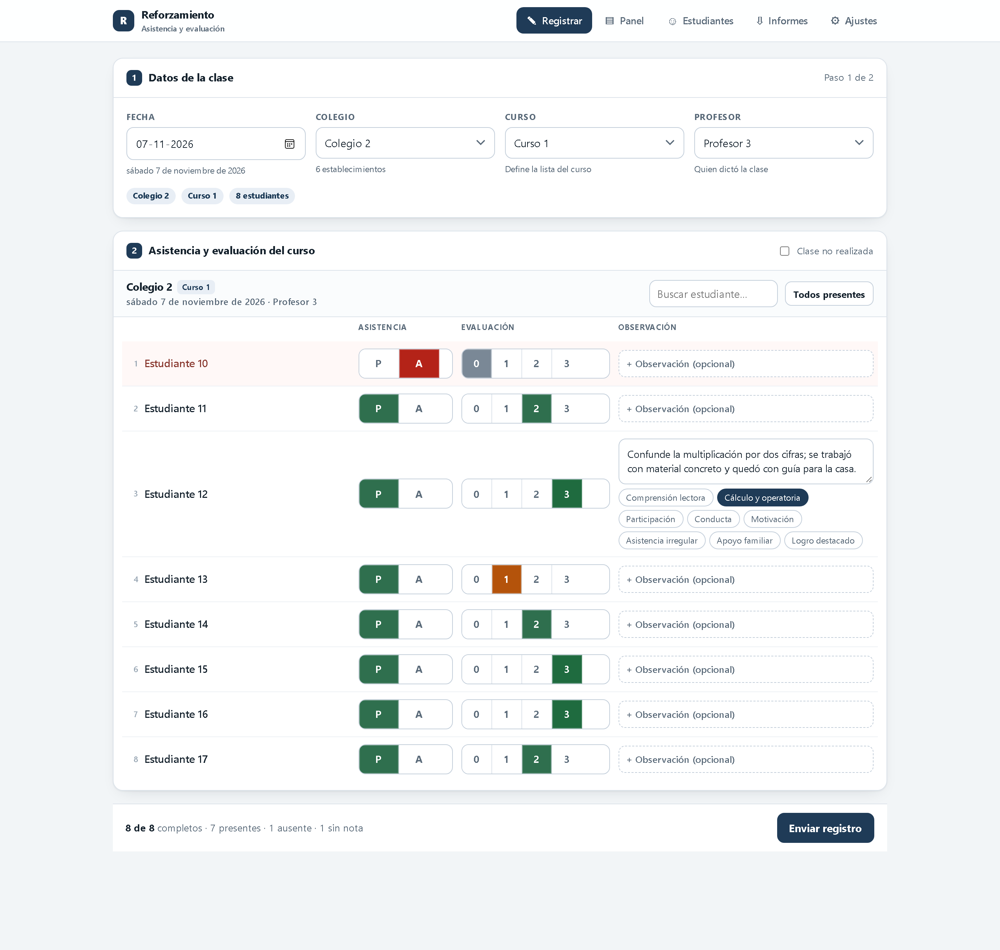
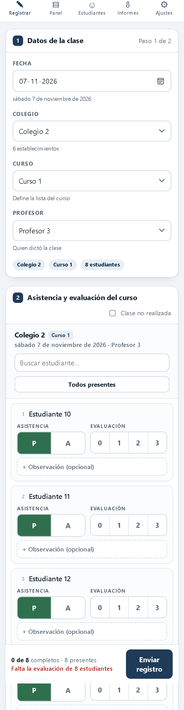
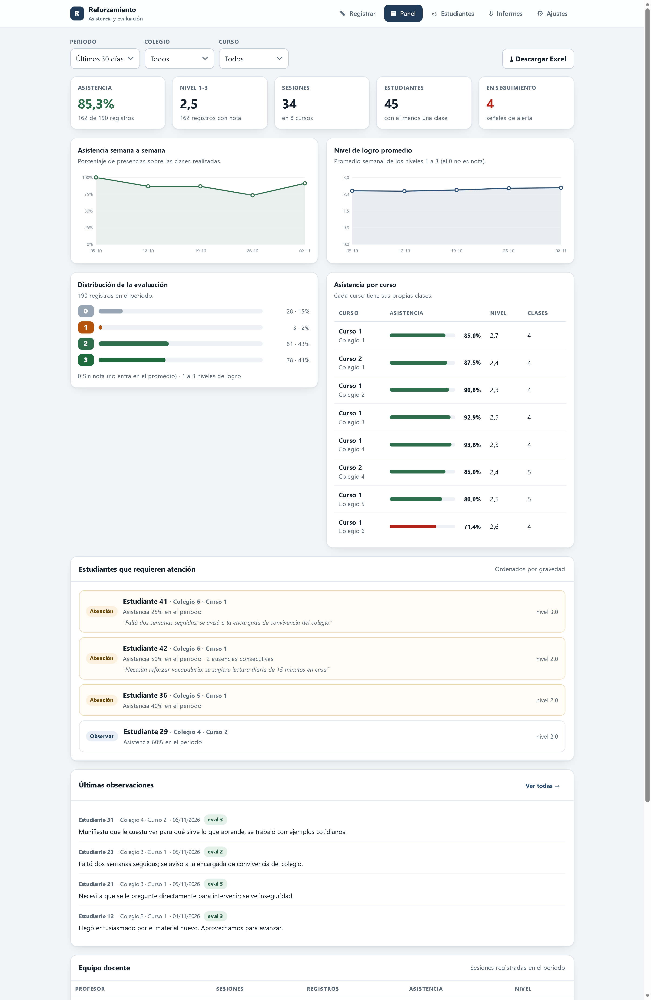

Comentarios a la propuesta, diez cambios concretos y una forma de implementarlo sin que el equipo vuelva a pelear con el Excel.
La propuesta está bien encaminada. El diagnóstico es correcto —el problema no es el Excel, es que el Excel se usa como pantalla de entrada— y la solución que imaginas respeta el lenguaje del equipo: dos secciones, tres bloques, una lista de estudiantes.
No la haría distinta en la forma. La haría distinta en el fondo, en tres cosas:
El éxito de esto no se juega en el panel de la líder ni en el Excel: se juega en que un profesor, de pie en un colegio, con el celular en una mano, termine de registrar una clase de 30 estudiantes en menos de dos minutos. Si eso no ocurre, en tres semanas vuelven al Excel. Por eso el prototipo está pensado con atajos ("todos presentes", evaluación con un toque) y no con formularios "correctos pero lentos".
| 2 | Lo que mantendría igual de tu propuesta. |
| 3 | Los diez cambios que propongo, cada uno con el problema que evita. |
| 4 | Cómo abordaría el desafío: arquitectura, etapas, costos y cómo medir si funcionó. |
| 5 | Las alternativas que evalué y por qué no las recomiendo. |
| 6 | Datos de menores: lo que hay que cuidar desde el día uno. |
| 7 | Lo que ya está construido y cómo probarlo. |
| 8 | Las cinco decisiones que necesito de ti para seguir. |
Esto no es cortesía: son decisiones acertadas y conviene no moverlas.
Están ordenados por impacto. Los cuatro primeros son de modelo de datos: si no se corrigen antes de cargar información real, después cuesta mucho arreglarlos. Los cuatro siguientes son de uso. Los dos últimos, de operación.
Qué pasa si no se cambia: la profesora Soto registra el martes. El jueves recuerda que se equivocó en dos notas y vuelve a enviar todo. Ahora hay dos juegos de filas para la misma clase: la asistencia del mes se calcula sobre el doble de registros y el porcentaje queda mal, sin que nadie lo note.
Qué propongo: que cada envío cree —o actualice— una clase identificada por fecha, colegio y profesor. La regla es simple: una clase por colegio y fecha. Si ya existe, el sistema avisa "esta clase ya estaba registrada" y muestra lo guardado para corregir, en lugar de agregar filas nuevas. En el prototipo ya funciona así: se puede reenviar veinte veces y sigue habiendo un solo registro.
Qué pasa si no se cambia: el estudiante no vino. El formulario exige una evaluación de 0 a 3. El profesor tiene tres caminos: dejar 0 (y el promedio del curso se hunde por una inasistencia, no por aprendizaje), poner 3 al azar (y se infla), o no enviar. Los tres son malos. Los datos quedan contaminados justo en los estudiantes que más interesa mirar: los que faltan.
Qué propongo: evaluación obligatoria solo si el estudiante está presente. Si se marca "A", el selector se apaga y el dato queda como "no aplica". La asistencia sigue siendo obligatoria para todos, y la evaluación sigue siendo obligatoria para todos los presentes: no se pierde la exigencia que pediste, se elimina el dato inventado.
Si el 15% de los registros son ausencias y todas llevan un 0 "de trámite", tu promedio general baja alrededor de 0,3 puntos sin que haya cambiado nada en la enseñanza. Y cuando quieras comparar dos colegios, estarás comparando niveles de inasistencia disfrazados de nivel de aprendizaje.
Qué pasa si no se cambia: hubo feriado, el colegio tenía acto, la profesora estuvo con licencia. Alguien marca a los 30 estudiantes como ausentes —o no registra nada—. En el primer caso, la asistencia del mes se cae por una causa que no es de los niños; en el segundo, la líder no puede distinguir "no hubo clases" de "nadie registró".
Qué propongo: una casilla "clase no realizada" con motivo (feriado, actividad del colegio, profesor ausente, otro). Esa clase no cuenta como ausencia de nadie, no entra en los promedios y aparece en el informe como clase suspendida. Son dos clics y evita un mes de datos inservibles.
Qué pasa si no se cambia: el desplegable de colegio funciona mientras cada colegio tenga un solo curso de reforzamiento. El día que el Colegio Los Aromos abra 5° A y 5° B —o que el reforzamiento se haga con dos niveles— la lista se mezcla y el informe por curso deja de existir.
Qué propongo: que el colegio tenga uno o más cursos, y que el estudiante pertenezca a un curso. Ya está implementado: la clase se registra por curso (fecha + curso), la pantalla agrega un selector de curso y la hoja de cada colegio trae un bloque por curso, porque dos cursos del mismo colegio pueden tener clases en fechas distintas.
Qué pasa si no se cambia: llega un estudiante nuevo en octubre. Si se agrega a la lista, aparece con cero en las clases de agosto y septiembre, y su porcentaje de asistencia queda castigado por clases a las que nunca fue invitado. Si se borra a quien se retira, se pierde su historial y los totales de meses anteriores dejan de cuadrar.
Qué propongo: fecha de ingreso y fecha de egreso. El sistema muestra a cada estudiante solo en las clases en que estaba vigente, y conserva todo su historial. En el prototipo hay dos estudiantes que ingresan a mitad de periodo y una que egresa: se ve en la planilla y en los porcentajes.
Qué pasa si no se cambia: el archivo se comparte por correo o WhatsApp, alguien lo abre, ordena una columna, borra una fila "que estaba repetida", y desde ese momento hay dos verdades. Es exactamente el problema que ya conocen.
Qué propongo: que el sistema sea la única fuente y que el Excel se descargue siempre completo y ordenado ("descargar Excel" en cualquier momento, con el periodo que se elija). Si la líder quiere trabajar a mano, copia las hojas a un archivo nuevo; el original se regenera. En el prototipo el botón está en el panel y en informes.
Qué pasa si no se cambia: una hoja por colegio en formato ancho —estudiantes en filas, fechas en columnas— es perfecta para leer y muy mala para analizar: cuando entra un estudiante o se agrega una fecha, las tablas dinámicas y los gráficos se desarman. Además no permite cruzar por profesor, por curso o por mes.
Qué propongo: mantener la hoja por colegio como "libro de clases" (es la que se lee) y agregar una hoja Registro con una fila por estudiante y por clase. Esa hoja es la que permite tablas dinámicas, gráficos y cruces sin depender de la forma de la planilla. En el Excel de ejemplo están las dos, más un resumen y un diccionario de códigos.
Qué pasa si no se cambia: cien observaciones en texto libre son un tesoro para leer y un desierto para analizar. La líder termina citando tres frases en el informe porque no puede agrupar el resto.
Qué propongo: mantener el cuadro de texto tal como lo pediste (es donde aparece lo que ningún formulario captura) y ofrecer, solo cuando se abre, unas etiquetas de un toque: comprensión lectora, cálculo, participación, conducta, motivación, asistencia irregular, apoyo familiar, logro destacado. Nadie está obligado a usarlas; quien las usa permite después decir "de 40 observaciones, 18 son de comprensión lectora".
Qué pasa si no se cambia: cada profesor interpreta la escala a su manera. Un "2" de la profesora Soto no significa lo mismo que un "2" del profesor Fuentes, y el promedio del curso mezcla dos reglas distintas.
Qué propongo: una leyenda de cuatro líneas acordada por el equipo, visible al pasar el mouse o en el diccionario del Excel. Una versión razonable: 0 no logra el objetivo de la sesión; 1 lo intenta con apoyo permanente; 2 lo logra con apoyo puntual; 3 lo logra de forma autónoma. No cambia la pantalla, cambia lo que significan los números.
Qué pasa si no se cambia: cualquiera puede editar cualquier cosa y no hay forma de saber quién cambió una nota. Y en los colegios el wifi falla justo cuando hay que registrar.
Qué propongo: tres reglas simples.
3.2 Evaluación solo al presente. En el modelo del proyecto el 0 no es una nota: es el registro de que no hubo evaluación. Por eso la evaluación se pide siempre, para presentes y ausentes, y el 0 es un valor válido. El promedio se calcula solo con los niveles 1 a 3 y los ceros se informan aparte como "sin nota".
3.5 Fechas de ingreso y egreso. La lista del curso es la lista vigente: quien se integra se agrega en ese momento y aparece en las clases siguientes. No se reconstruye la composición histórica del curso.
3.9 Leyenda de la escala. El equipo se reúne cada semana y conoce el significado de los niveles; no se agrega leyenda ni editor de rúbrica en esta fase.
Quedan anotadas para retomarlas más adelante, cuando el proyecto lo permita.
| Cambio | Problema que evita | Esfuerzo |
|---|---|---|
| 3.1 Clase como entidad | Registros duplicados y porcentajes inflados | Bajo |
| 3.2 Evaluación solo al presente | — | No aplicado |
| 3.3 Clase no realizada | Asistencia hundida por feriados o licencias | Bajo |
| 3.4 Curso dentro del colegio | Mezcla de niveles cuando un colegio tiene dos cursos | Medio |
| 3.5 Ingreso y egreso | — | No aplicado |
| 3.6 Excel como salida | Versiones paralelas del mismo archivo | Medio |
| 3.7 Hoja plana + hoja por colegio | Tablas dinámicas que se rompen al cambiar el curso | Bajo |
| 3.8 Etiquetas opcionales | Observaciones que no se pueden agrupar | Bajo |
| 3.9 Leyenda 0-3 | — | No aplicado |
| 3.10 Roles, historial, sin conexión | Ediciones sin rastro; pérdida de registros | Alto |
| Pieza | Qué hace | Quién la usa |
|---|---|---|
| App de registro | Pantalla de dos secciones. Funciona en celular y computador, con o sin internet. | Profesores |
| Base de datos | Guarda cada clase y cada estudiante una sola vez. Es la fuente de verdad. | — |
| Panel e informes | Indicadores, alertas, observaciones y borrador de informe. | Líder |
| Exportador Excel | Genera el archivo con una hoja por colegio, la hoja plana y el resumen. | Líder (y quien ella autorice) |
Una aplicación web, sin instalar nada: se abre desde un enlace en cualquier celular o computador. Base de datos en la nube con respaldo automático y permisos por rol (por ejemplo Supabase, que es PostgreSQL administrado, o un servidor equivalente). El Excel se arma en el mismo servidor para que las hojas salgan siempre iguales.
Lo que no haría: una app para descargar de la tienda (nadie la instala, y cada actualización depende de que todos actualicen), ni una planilla de Google compartida (vuelve al problema inicial), ni un desarrollo "a medida" con login y menús complejos (la mitad del equipo no los va a usar).
| Tabla | Campos principales |
|---|---|
colegios | id, nombre, curso(s), comuna |
profesores | id, nombre, rol, acceso |
asignaciones | profesor_id, colegio_id, desde, hasta |
estudiantes | id, nombre, colegio_id, curso, ingreso, egreso |
clases | id, fecha, colegio_id, profesor_id, realizada, motivo |
registros | clase_id, estudiante_id, asistencia, evaluación, observación, etiquetas, quién y cuándo |
La clave está en una restricción única sobre (clase_id, estudiante_id): la base de
datos misma impide duplicar a un estudiante en una clase, aunque dos profesores envíen al mismo
tiempo. Es la diferencia entre "confiar en que la app valide" y "que sea imposible".
| Etapa | Duración | Qué queda funcionando |
|---|---|---|
| 0 · Prueba con lápiz | 1 a 2 semanas | Dos profesores registran dos clases reales con el prototipo. Se ajustan campos, tiempos y textos. Se acuerda la leyenda 0-3. |
| 1 · Versión usable | 3 a 4 semanas | App online con acceso por rol, registro de clases, panel y Excel. Carga inicial de colegios, profesores y estudiantes. |
| 2 · Informes | 2 semanas | Informe en Word o PDF con los números y las observaciones ya redactados; alertas por correo; historial de cambios. |
| 3 · Crecimiento | según necesidad | Más de un curso por colegio, varias comunas, evidencias fotográficas, carga masiva de estudiantes desde una planilla. |
Las duraciones suponen dedicación continua y las decisiones del punto 8 tomadas al inicio. La etapa 0 es la más importante y la que más se suele saltar.
| Ítem | Estimación | Comentario |
|---|---|---|
| Hosting y base de datos | US$0 a 25 al mes | Con 6 colegios y 45 estudiantes, el plan gratuito o el más bajo alcanza. Crece con el uso. |
| Dominio | US$12 a 20 al año | Opcional: se puede usar el enlace del proveedor. |
| Correo transaccional | US$0 a 10 al mes | Solo si se envían alertas o informes por correo. |
| Licencias por usuario | US$0 | Una ventaja frente a las plataformas tipo Airtable o Glide, que cobran por persona. |
En régimen, el sistema cuesta menos que una licencia mensual de las alternativas "sin código" para cinco usuarios.
Las comparé con el mismo criterio: que un profesor pueda registrar en dos minutos, que el Excel salga como tú lo pediste y que no haya que editar el archivo a mano.
| Alternativa | Costo | Tiempo | Donde falla | Veredicto |
|---|---|---|---|---|
| Google Forms + Sheets | Casi cero | Un día | Un formulario produce una respuesta por envío: no se puede registrar 30 estudiantes con A/P y nota en una sola pantalla. Corregir obliga a editar la planilla. Sin control de duplicados. | No sirve |
| Excel con listas y macros | Cero | Una semana | Es el punto de partida: el problema es la adopción, no la herramienta. Las macros se rompen al copiar el archivo y no funcionan en el celular. | No resuelve |
| Airtable / Glide / AppSheet | US$10 a 25 por usuario al mes | Dos semanas | Rápido para partir, pero el costo crece con cada profesor, la exportación a Excel queda "parecida" y no exacta, y la información queda en un tercero. | Plan B |
| App web a medida | Hosting bajo, desarrollo inicial | 4 a 6 semanas | Nada relevante, salvo que exige mantenerla. A cambio, el Excel sale exactamente como se necesita y no se paga por usuario. | Recomendada |
Hay un caso intermedio que vale la pena considerar si la urgencia es alta: partir con Airtable o Glide durante dos meses para validar el flujo con los profesores, y construir la versión definitiva con lo aprendido. El riesgo es que "provisorio" dure dos años.
Esto no es un trámite. Son nombres de niños, su asistencia y observaciones que pueden ser sensibles ("apoyo familiar", "conducta", "asistencia irregular"). Un archivo con eso, circulando por WhatsApp, es un problema para el proyecto y para el colegio.
Antes de agregar un campo, preguntarse: ¿qué decisión se toma con este dato? Si la respuesta es "ninguna", no se pide. Es la forma más simple de cumplir con proporcionalidad y de mantener la pantalla rápida.
Para no discutir sobre un dibujo, armé un prototipo funcional con datos de ejemplo: seis colegios, siete profesores, 45 estudiantes y diez semanas de clases (424 registros). Se abre con doble clic, no requiere instalación ni internet, y permite registrar, corregir, mirar el panel y descargar el Excel real.



El archivo de ejemplo (Ejemplos/Informe-Ejemplo.xlsx) tiene once hojas:
| Hoja | Para qué |
|---|---|
| Resumen | Indicadores del periodo, comparación por colegio, desempeño por profesor y estudiantes en seguimiento. |
| Una por colegio (6) | Libro de clases: estudiantes en filas, fechas en columnas, celda "P · 3"; a la derecha, asistencia, promedio y última observación. |
| Registro | Una fila por estudiante y clase, con filtros: es la hoja para tablas dinámicas y gráficos. |
| Observaciones | Todo el texto cualitativo con fecha, colegio, profesor y etiqueta. |
| Estudiantes | Nómina con ingreso, egreso y porcentajes individuales. |
| Diccionario | Qué significa cada código y cómo usar el archivo. |
Ya funciona
Falta para producción
1. Abrir Sistema-Asistencia.html (doble clic).
2. En "Registrar", elegir un colegio y completar la lista de una clase.
3. Presionar "Enviar registro" y luego "Descargar Excel" en el panel.
Los datos de ejemplo se pueden restaurar en Ajustes.
Estas son las definiciones que ya tenemos y lo que cambia en el sistema con cada una.
| Tema | Decisión | Efecto en el sistema |
|---|---|---|
| Cursos | Un colegio tiene varios cursos. | La clase se registra por curso y no por colegio: la clave es fecha + curso. La lista de estudiantes se filtra por curso y el informe separa un bloque por curso dentro de la hoja del colegio. Implementado |
| Escala 0-3 | El nivel se definirá con otra pauta de evaluación de la clase; se revisa en dos semanas. | 0 = sin nota; 1, 2 y 3 son los niveles que el equipo define en sus reuniones semanales. No se agrega leyenda ni rúbrica en esta fase. Se retoma cuando llegue la pauta. Sin cambios |
| Corrección | Un mes desde la fecha de la clase. | Dentro del mes el profesor corrige y reenvía. Pasado el mes el registro se cierra y solo la líder puede modificarlo. El plazo es configurable en Ajustes. Implementado |
| Dispositivos | Celular y computador, principalmente celular. | El registro está pensado para pantalla pequeña: botones grandes, etiquetas por columna y guardado sin conexión en la versión online. Diseñado |
| Dónde se guardan los datos | Repositorio en GitHub. | GitHub guarda el código; los datos de estudiantes necesitan una base de datos. Ver la advertencia siguiente. Por definir |
Un repositorio de GitHub es un lugar excelente para el programa: guarda versiones, permite revisar cambios y publicar la app para que se abra desde un enlace (GitHub Pages). No sirve, en cambio, como lugar donde el sistema escriba la asistencia: para grabar desde la app habría que poner una llave de escritura en el navegador, cualquier persona podría leerla, dos profesores chocarían al guardar al mismo tiempo y cada registro quedaría en el historial público del repositorio. Además, un porcentaje de asistencia de un menor no debería vivir en un historial de commits.
Lo que sí funciona bien: el repositorio guarda el código y la base de datos vive aparte, en un servicio con respaldo y permisos (por ejemplo Supabase, que es PostgreSQL administrado y tiene plan gratuito suficiente para 6 colegios y 45 estudiantes). La app que está en GitHub se conecta a esa base con una clave pública y reglas de acceso por rol. El Excel se sigue generando desde ahí.
Probar la versión actual con dos profesores y dos cursos reales durante dos semanas, en paralelo a la definición de la pauta. En esa prueba se mira cuánto demoran, qué campos estorban y qué preguntan. Después de eso se conecta la base de datos: es la parte que más conviene construir una sola vez y con la pantalla ya validada.
Este documento acompaña a Sistema-Asistencia.html (prototipo) y
Ejemplos/Informe-Ejemplo.xlsx (informe de ejemplo con datos ficticios). Los nombres son genéricos
(Colegio 1, Profesor 1, Estudiante 1) y no corresponden a personas ni establecimientos reales.